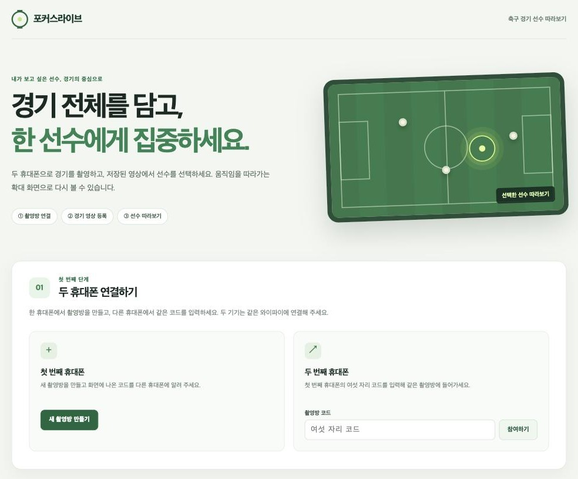
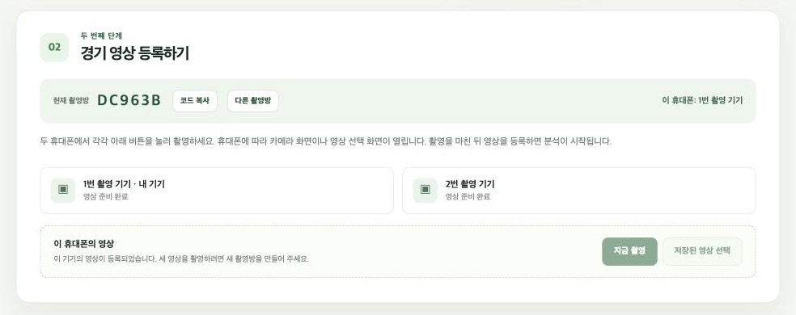
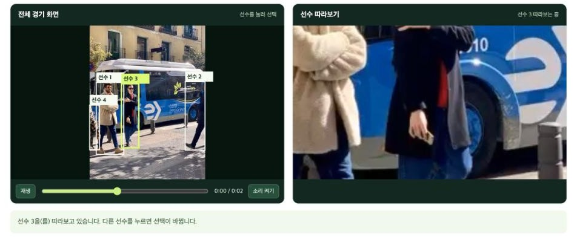

휴대폰 두 대로 축구 경기를 찍고, 보고 싶은 선수를 고르면 확대 화면이 그 선수를 따라갑니다.
일반적인 경기 촬영은 사람이 카메라를 들고 원하는 선수를 따라 확대·이동해야 합니다.
경기장을 넓게 찍으면 한 선수의 움직임이 작게 보여 다시 보기 어렵습니다.
촬영자가 공만 따라가면 공 없는 곳에서의 움직임과 멋진 플레이가 화면 밖으로 빠집니다.
한 휴대폰에서 촬영방을 만들고, 다른 휴대폰이 여섯 자리 코드로 참여합니다.
각 휴대폰에서 경기를 찍거나 저장된 영상을 올리면 분석이 시작됩니다.
분석이 끝난 영상을 열고 원본 화면에서 선수 표시를 누릅니다.
확대 화면이 선수를 따라갑니다. 추적이 끊기면 전체 화면으로 돌아가 다시 고르도록 안내합니다.



화면 캡처는 동작 확인용 짧은 샘플 영상으로 만들었으며 실제 축구 경기 장면이 아닙니다.
휴대폰 브라우저로 접속해 기본 카메라로 촬영하거나 저장된 영상을 올립니다. MP4·MOV·M4V·WEBM, 최대 500MB.
같은 와이파이의 컴퓨터가 촬영방, 기기 연결 상태, 영상 저장과 변환을 맡습니다.
초당 약 4프레임을 분석해 사람을 찾고 추적 번호를 붙입니다. 재생 화면은 이 위치를 따라 확대합니다.
두 휴대폰으로 찍고, 보고 싶은 선수를 누르세요. 나머지는 AI가 따라갑니다.